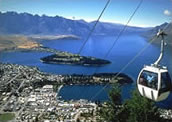

Welcome to NZ Escape
We are a popular tourism guide featuring a large selection of quality New Zealand attractions, accommodation, and transport providers. If you are visiting our beautiful country and need help with planning your holiday, this is a great place to start.
We are a popular New Zealand tourist attractions guide with information on places to visit. Whether it be sightseeing in Auckland or Wellington, a scenic boat cruise in Queenstown, experiencing the geothermal wonderland of Rotorua, a fascinating up-close Glacier encounter near Mt Cook, the raw beauty of Fiordland's Milford Sound, or elsewhere, NZ Escape will help you find memorable things to do.
We list a range of quality accommodation providers for you to choose from. Whether you are looking for accommodation in Auckland, hosted lodges / Bed and Breakfasts in Wanaka or luxury holiday apartments in Queenstown, a place to stay in Franz Josef Glacier, quality motels in Hanmer Springs, hotels with mountain views at Aoraki / Mount Cook, or anywhere else in New Zealand, you will find it here.
Our transport guide offers information on getting around New Zealand including rental cars, campervans, custom tours, domestic airlines, ferry sailings and more. Our tourism guide also provide answers to frequently asked questions about visiting NZ.